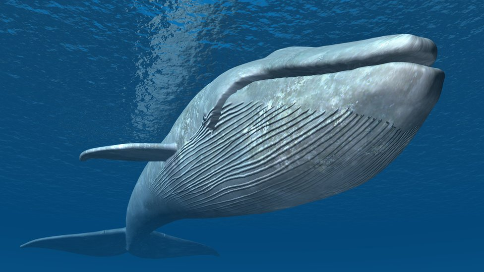
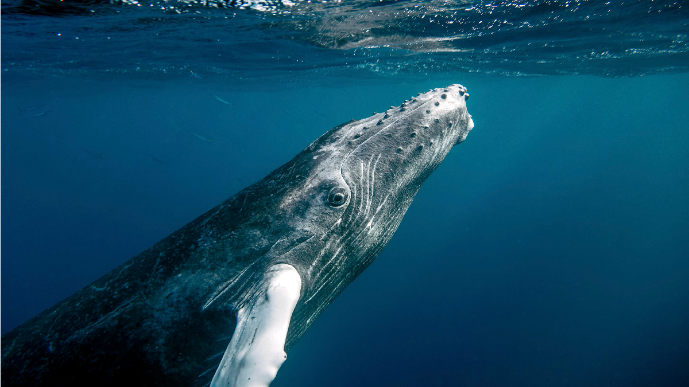
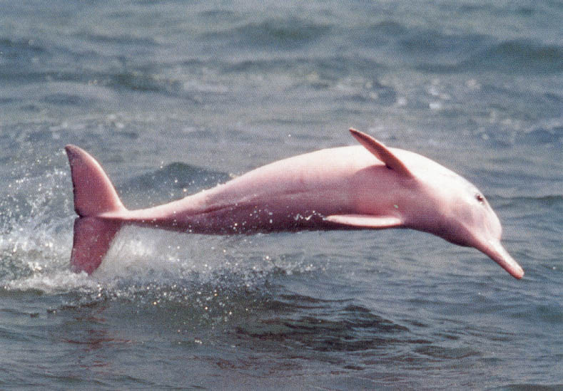
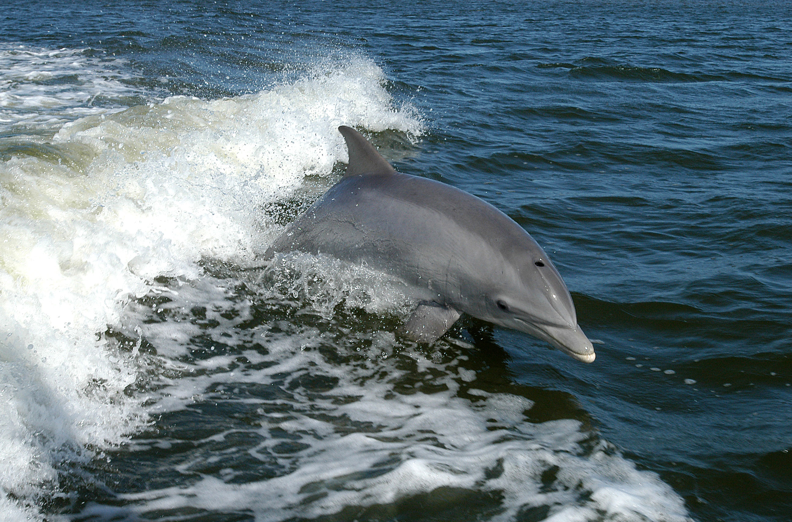

El narval es una especie de cetáceo odontoceto de la familia Monodontidae que habita los mares del Ártico y el norte del Océano Atlántico. Es el único integrante del género Monodon y una de las dos especies de la familia junto a la beluga (Delphinapterus leucas).
Los machos de esta especie se caracterizan por presentar un colmillo muy largo y retorcido de manera helicoidal que puede llegar a medir dos metros y pesar hasta diez kilogramos (en el Museo Rocsen en Nono, provincia de Córdoba en la República Argentina poseen un colmillo de 270 cm que según dice el fundador Juan Bouchon es el más grande del mundo[cita requerida]). Se cree que este diente especializado puede ser un receptor sensorial o un carácter sexual secundario.
Esta especie está adaptada a vivir en el Ártico y se alimenta de animales del fondo marino. Carece de aleta dorsal y tiene un tamaño mediano entre los cetáceos, con una longitud promedio en los adultos que oscila ente 4 y 4,5 m y un peso de entre 1000 y 1600 kg. Posee una dieta que se restringe únicamente a algunos peces y crustáceos, de los cuales se alimenta primordialmente durante los meses de invierno, época en la cual consume un gran volumen de presas que captura en el fondo marino. Para ello debe realizar inmersiones que con mucha frecuencia superan los 800 m bajo la superficie, las cuales pueden durar hasta 30 minutos. Después del cachalote, zifio y elefante marino es el mamífero marino que se sumerge a mayor profundidad.
Se distribuye principalmente en aguas de la región ártica del norte de Canadá, los mares del lado ruso del océano Ártico y al norte del océano Atlántico. Habita principalmente en torno a los bloques de hielo que se forman durante los inviernos prolongados del Ártico, migrando a las bahías y fiordos circumpolares durante el verano. Se cree que la población mundial es de algo más de 75 000 ejemplares. En 2008 fue catalogado en la Lista Roja de la UICN como especie casi amenazada, debido a que se mantiene una caza significativa, controlada, por parte del pueblo inuit en Canadá y Groenlandia (Dinamarca), los cuales se benefician con su carne, grasa y el comercio del colmillo. También se ubicó en esta categoría por la evidente disminución en la población de algunos grupos, la falta de certeza sobre la cifra total de animales y el desconocimiento de las tendencias de crecimiento.
Otras amenazas para la población de este cetáceo son: la depredación por parte de sus enemigos naturales (tiburones, osos polares y orcas), la contaminación por plaguicidas y metales pesados, los atrapamientos dentro de densas capas de hielo al inicio del invierno que les impide moverse a mar abierto muriendo de inanición y por ahogamiento, y la poca capacidad de adaptación ante los cambios climáticos.
|
 |
 |
|  |
 |